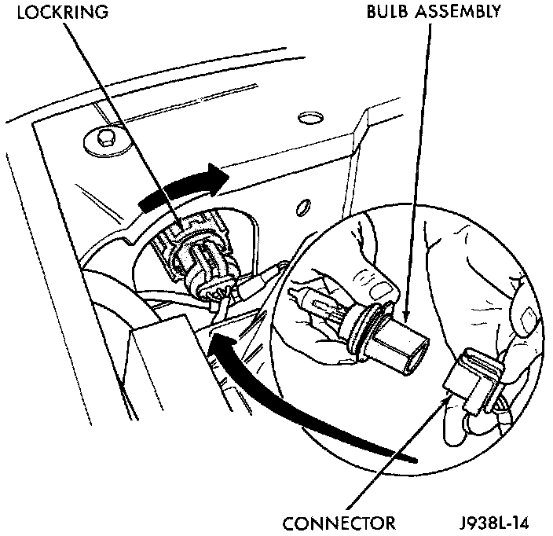

Headlamp Bulb: Service and Repair
REMOVAL1. Lift hood to access lamps. If clearance is minimal behind the headlamp assembly, refer to the Headlamp Removal/Installation procedure for bulb replacement.
2. Reach into engine compartment and locate lock ring supporting the headlamp bulb assembly
Headlamp Bulb:

3. Rotate the lock ring 1/8 turn counter clockwise.
4. Pull the bulb straight out from the housing.
INSTALLATION
CAUTION: Do not touch the bulb glass with fingers or other oily surfaces. Reduced bulb life will result.
1. Install new bulb.
2. Position bulb assembly in the lamp housing and turning the lock ring 1/8 turn clockwise to secure.